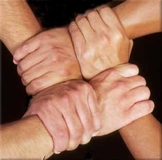

AIIC. (February-March 2002). Interpreter workload story - Full report.
AIIC. (February-March 2002). Interpreter workload story - Full report.

(The image above is from http://www.students.dsu.edu/deardufh/Hollie'sWebpage/hollie.html
[Hollie Megan Dearduff], which is no longer extant.)
There may be a need for a team interpreter due to length of assignment, complexity of material, pacing of speaker, multiple speakers, working with a Deaf-Blind consumer, or a need to copy sign questions from the audience. Ideally you should choose an interpreter you have worked with before, feel comfortable with and supported by. Prepare with your team mate before the event, if possible, or meet at some point to compare notes. If you are the interpreter for the general deaf audience and there is an Deaf interpreter for a Deaf-Blind consumer, you or your team mate may have to keep an eye on the Deaf interpreter's need for a repetition or clarification. People used to say the "on interpreter" and the "off interpreter" or "hot seat" and "cold seat", but the preferred terminology is "primary interpreter" and "support interpreter".
Thomas Carlyle said "Make yourself an honest man, and then you may be sure that there is one less scoundrel in the world." My previous protocol in teaming was to ask my partner if they wanted "active teaming", in other words, for me to be ready to feed them during my time as the support interpreter. Know that I have benefited from this discussion I see that I need to change my strategy. From now on, when I meet my team mate I will say that I need active feeding and could they please observe me and feed me when necessary. This is beacuse now that I am older I am losing some hearing through presbycusis and sometimes when students are a bit far away and don't speak up, I may miss what they say. Of course all interpreters miss some information for various reasons, but often we ask for a repeat or just make a judgment that what was missed was not vital and so just drop it. That is all I will say and when it is my turn, I will watch my team mate whether they ask me to or not. If they tell me then or later that I don't need to watch them, I will tell them that I often learn from observing other interpreters. If they say DON'T watch me, I will try to determine why this is. I think that over the process of time, it will force interpreters in Rochester to assess what it is that they do while teaming. We all know that some people refuse to learn: there is nothing that we can do with them. Others, like myself, do some things without reflecting on the consequences, and this method may make them think, as I have thought, about why the status quo may need improvement.
Preparation
How much preparation you do for an assignment will depend on the challenges it presents to you personally, as well as the realistic time constraints and the nature of the assignment, Decide how to split up the prep and share what each of you have found out later. To get accustomed to the style of the presenter, the following options are open to you in descending order of preference. If the presenter is deaf: (1) watch a videotape of the presenter on the same topic, (2) watch a videotape of the presenter on a different topic, (3) watch a videotape of a different deaf presenter on the same topic. If the presenter is hearing; (1) listen to a tape (audio or video) of the presenter on the same topic, (2) listen to a tape of the presenter on a different topic, (3) listen to a tape of a different hearing presenter on the same topic.
If no tapes are available, or if the assignment is an ongoing one, you may wish to find something written on the topic, especially by the presenter you will interpret for. Other written resources are encyclopedia articles, glossaries, articles from periodicals, or information from the World Wide Web. If an article is too lengthy, reading only the topic sentences (first sentence of every paragraph) may be helpful. Hearing and deaf people that are knowledgeable about the topic can supply you with good sign/word choices for the target language, as well as explain the meaning of the concepts in the source language. If this is an ongoing event, notes from the previous sessions will give clearer context.
Even a brief meeting between the principal speaker and the team interpreters, if at all possible, will give needed information and build trust with the presenter. Request copies of any handouts, overheads, or lecture notes. Find out what media will be used (movies, videotapes, PowerPoint, and so one) to determine placement and lighting needs. If you don't have time to read them, at least your team mate can feed you and prepare for her/his turn. Ask the presenter what the overall goal and major points are. Do any consumer education you feel is warranted. The team interpreters should also meet 10-15 minutes before the event. Your situation may not require all of the items below. However, be aware of them and keep them in mind when you are teaming.
Placement - English to ASL
You the interpreter will stand in a place that allows the Deaf audience to see the information: overheads, PowerPoint presentations, films, maps, and other media. Where will your team mate be? Some people have the team mate sit side-by-side, even for English to ASL. It seems to me that there should be some distance between the two so that your team mate can see what you are signing and feed you short bits of information without too much distraction. However the deaf people's eyes will naturally turn to whoever is signing, so perhaps a philosophy of open processing would be appropriate.
Open processing means that if the team mate understands what was said but you don't or have misunderstood and consequently missigned a large portion of what was said, the team mate chimes in and takes over for that short portion. You might even want your team mate to continue if you find that you don't understand because of topic change, the audience member has a thick accent, or some other factor. If everyone is sitting at a table, the interpreters could sit almost side-by-side, with perhaps one seat in between for them to see each other comfortably. When it comes time to switch, no one has to move. The deaf person merely switches his/her gaze.
Placement - ASL to English
You no longer need to stand close to the visual information and will now sit. It makes sense to sit side-by-side, since your team mate does not need to see you and can also whisper the feed (chucotage or sotte voce). It is now possible for there to be long feeds that are taken up by you and said in normal volume. You can always turn the interpretation over to your team mate if you feel that the feed will be lengthy, or they seem to have a better handle on the signer. I wonder how this works for the hearing audience. Deaf people have become so tolerant of the needs of interpreters to switch off, wait for full understanding of a text, and even interpret what the interpreter is trying to say, that these sorts of bumps in the interpretation hardly jar them any more. I know if I were listening to a spoken interpretation of, say, a Russian speaker and another voice chimed in, I would be thrown off, but maybe we all have to get used to such a thing. When there is no microphone but the room is fairly large, it may be beneficial for the interpreters to stand behind the entire audience so that the audience can hear them.
Signaling
How will you signal when you need help? How will your partner signal? Some ways to signal are: eye gaze (I tell my team mate I will never look at them unless I need help), puzzled look, raised eyebrows/wide eyes for teamed English to ASL; whispered need, touch on your partner's shoulder or arm (check first), or leaning towards your partner for ASL to English. Some things an interpreter may need to signal for: missed a word/sign, what was that fingerspelling, I know the word but how do you spell it, what does that word/sign/phrase/sentence/concept mean, something non-verbal just happened that I missed, or what's the sign/word for that? Plan quick and unobtrusive ways to ask your partner for these things.
Feeding
Some "team" interpreters think they are just there to wait for their turn. I have been guilty myself of trying to work on projects while being part of a team. Make sure that your team mate says s/he is fine without feeding before you bring out that book or laptop. Where will each of you be to allow for ease of feeding and smooth turn-taking? How do you want your partner to feed you missed information? How does your partner want to be feed? Can you volunteer missed or misunderstood information, even if not asked for it? Some ways to feed: in ASL, in English-influenced ASL (contact language), or with mouthing. What do you want your partner to be particularly attentive to, that is, what do you generally need help with? Some examples: fingerspelled information, numbers, proper names, or the big picture (the text or gestalt).
Team mate's responsibilities
There are many names for the team interpreter who is not at present signing or speaking the interpretation: feed interpreter, down interpreter, off interpreter, cold-seat interpreter, the non-working interpreter (if things are going properly that is a misnomer!). All of these have advantages and drawbacks. For the purposes of this paper, I will simply say your team mate and "you" will mean the on interpreter, working interpreter, up interpreter, hot-seat interpreter, what have you, unless otherwise specified.
Your team mate may need to take care of various things that come up, besides feeding you. These may include: fixing the lighting, changing a distracting background, getting the handouts, bringing water, adjusting the microphone, or what to do about audiovisuals. (Help! They just turned off all the lights!)
Continuity and turn-taking
What happens when one interpreter's style/language variation is markedly different from the others? Suppose you choose one way of expressing a concept and your team mate believes there's a better way to handle it or that the interpretation needs to be more English or more ASL. Do you both continue to interpret without making any adjustments to your style or choices? How often will you replace each other? It's important to negotiate. Try to use what your team mate has set up in terms of spatialization and sign negotiations. The method of spelling or replacement is an issue that will also allow for continuity if it is done properly. The best method is to decide on the approximate time that you will replace each other, such as every 20 minutes. When the time arrives, the team mate should let you know that it is time, because you will be too busy interpreting to check your watch and it looks rather tacky to check your watch anyway.
If the interpreters are positioned very close to one another, the team mate can simply walk up to the interpreter when it seems that an idea has been completed or when it seems there will be a considerable pause. The interpreter can stand up or move out of place if already standing and the team mate can take her/his place. If it is hard to tell when the speaker will pause because they don't tend to pause in their speech, the team mate can signal to the interpreter TIME+ and then the interpreter will simple leave when they feel they can or simply at some random time if there never is a "good time". In a formal stage event, the team mate can come up behind the interpreter from the wings, tap the interpreter on the back and move back slightly, remaining behind the interpreter and wait for the interpreter to walk away.
Turn-taking can become more complex if there are many deaf people and they are interacting with each other. This is because we need to see each person fully and can't rely on our hearing to jump from one speaker to another. If there will be a lot of this, it is better for the interpreters to take every other speaker. This allows the hearing audience to hear that there has been a change of speakers and allows the interpreters to see the full comment even when the next signer is far away or interrupting. If there is someone who is doing most of the signing, one interpreter can take this person during their "turn" and the team mate will take the next signer who will presumably not take as much time. If a third signer chimes in before the leader responds, the teacher's interpreter will also have to interpret this signer. It can be somewhat confusing but simply identify a change of speaker's if one interpreter ends up doing two people in a row.
Debriefing during the assignment and after
Use a notebook or piece of paper to communicate to each other during the assignment. Your team mate can write down comments while you are up and vice versa. You can comment on items that this paper identifies if you forgot to mention something during your pre-meeting that you would like your team mate to do. Remember to also give each other a pat on the back for things that were done especially well. Remember to share the total interpretation, rather than play the game of one-upmanship. Don't feel insulted if you are being feed something; that's why your team mate is there. If you are the feeder and the interpreter doesn't accept your feed, don't feel rejected. Perhaps they weren't able to incorporate it, or weren't sure what you meant. Do work together. One of the stickiest problems is what you do if you are in an on-going assignment that you find does not need two interpreters because there is so much unexpected down-time due to independent student work? The ideal would be if each of you could take every other class or one person take the whole thing because the other is confident of finding other work. I leave this as a moral exercise for the reader.
Have a post-meeting, even if it's short, to sum up how things went. It's important to find out what worked and didn't work for you and your partner. I'm sure you have had the experience of coming up with just the right thing to say or do after it's too late. This doesn't have to be a frustration. Brainstorm solutions for problems that occurred and use them next time you encounter a similar situation. Use the same tact you would use with your consumers to deal with differences of opinion.
Deaf-Hearing teams
Don't forget to consider a Deaf interpreter (CDI) as a team mate, especially in such situations as: (1) ASL-English if the CDI's voice is sufficiently understandable, (2) Deaf-Blind, (3) legal, (4) mental health, (5) High Visual Orientation (previously called Minimal Language Skills), (6) International Gesture, and (7) shadow interpreting for audience visibility. Some Hearing interpreters feel funny if they have a Deaf interpreter with them, because it looks like they can't do their job alone, and they may feel the Deaf person is looking them over. Well, sometimes we can't do our job alone and that's okay. We should strive to be able to survive scrutiny by CDIs or other interpreters.
Interpreters need to feel a part of the team. The CDI should not take the tact of "Oh, that interpreter doesn't understand you. Let's talk and then I'll tell them what you said." Instead the CDI should act as a facilitator of communication and allow the Hearing interpreter to be "in on" the communication. It's true that the hearing interpreter still won't feel the client rapport that would exist if s/he was working alone. Maybe that's life.
The most interesting Deaf-Hearing team I have worked on is one where I did very little and yet benefited markedly. I went to a Deaf Shabbaton where many Deaf people came to a Hearing synagogue and participated in a Jewish Shabbat (Sabbath) service. Afterwards there was a dinner mainly for the Deaf guests with interested hearing people also attending. For the service, one of the Deaf participants was a Deaf Israeli who knew English, ASL, and Shasi (Israeli Sign Language). The Jewish service is scripted, that is everyone reads from the siddur (prayerbook), sometimes aloud, sometimes to oneself. I sat in the congregation and signed the beginning of each new section to the Deaf interpreter, who then read the Hebrew and interpreted it into ASL. I would still sign the beginning of new sections to the interpreter so he could keep pace with the sh'lach tsibbur (prayer leader). I benefited greatly because I got to see someone who was fluent in Hebrew give his take on how the ideas of the text could be communicated into ASL. Hope your career will also team (teem) with blessings!
AIIC. (February-March 2002). Interpreter workload story - Full report.
Bar-Tzur, D. Humor and stories for interpreters: Team interpreting.
DHHS policies and procedures manual - Teaming.
Farrell, J. (Spring 1997) NJ interpreter takes the heat for advocating team interpreting.
Festinger, N. (Summer-Fall 1999) When is a team not a team?
Frishberg, N. Team interpreting in the classroom.
NAJIT team interpreting resolution.
Rosenthal, L. L. (March - April 1999) Deaf/Hearing team interpreters.
Vidal, M. (Winter 1997) New study on fatigue confirms need for working in teams. A downloadable pdf file.